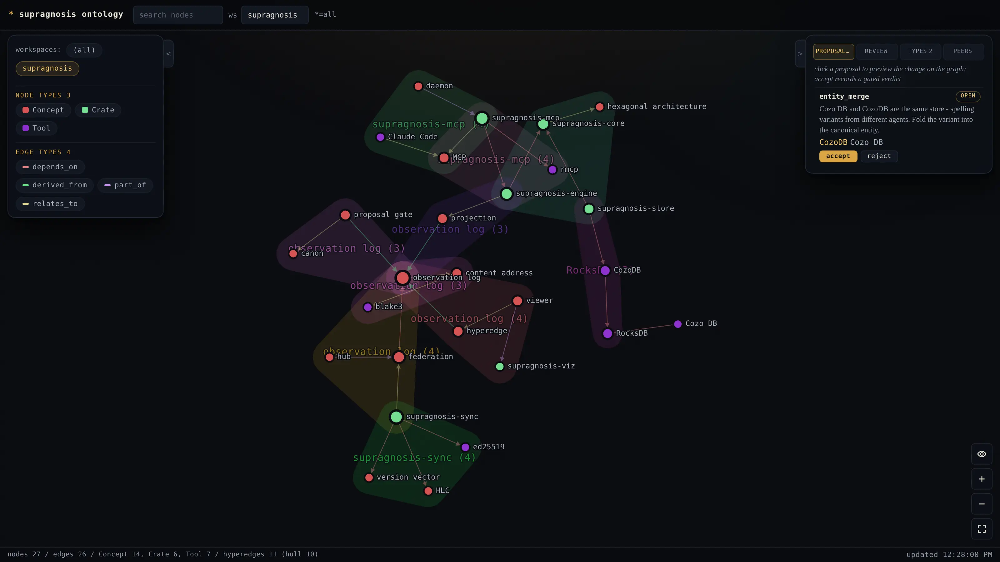

Your agents learn constantly and remember nothing. supragnosis gives
them a memory that outlives the session: an embedded, file-based
knowledge server written in Rust where agents shed observations as a
by-product of work, recall them weeks later - receipts included - from
any machine, and humans govern what becomes canon. Any MCP client, any
host, any workspace.
installcurl -fsSL https://supragnosis.dev/install.sh | sh
v0.1.18
Rust
MIT OR Apache-2.0
macOS arm64 / x86_64
Linux x86_64
macOS desktop app
01 / agent-first
Agents build it. Humans govern it.
agents
Agents write
Knowledge management dies the moment it becomes separate labor - so
here it is a by-product of work. While your agents code, debug, and
decide, they shed observations through one low-friction tool: free
text plus whatever structure they can already offer. No forms, no
curation shift.
agents
Agents induce the schema
No ontologist draws the taxonomy up front. Unknown knowledge lands as
loose concepts, patterns harden with use, and agents promote them
through define_type - every type with a mandatory
plain-language definition. The workspace map keeps score of what is
said together, so the next type worth naming surfaces on its own.
humans
Humans supervise
Ingest is free; canon is governed. Entity merges, trust promotions,
and vocabulary changes travel through PR-like proposals that a human
reviews in the curation console - and the tier a verdict may grant
depends on the surface it arrives on, so an agent-cast verdict cannot
reach human-confirmed.
02 / guarantees
Three guarantees, held everywhere.
Assertions, not facts
Every answer can say where it came from. The log never stores "X is
true" - it stores who observed X, acting for whom, when, with what
confidence. Belief is computed on top by a replaceable policy, so
changing whom you trust recomputes the belief from the same log.
Supersede, don't delete
Nothing your agents learn is ever lost. Corrections supersede rather
than erase, contradictions surface as signals instead of being
silently resolved away, and forgetting only demotes recall - the log
is eternal; only attention is finite.
Deterministic core, probabilistic edge
No model ever judges your knowledge. LLMs and embeddings extract and
widen recall - they draft, they never decide. Everything that commits
is deterministic, so the graph is correct with no model attached at
all, and every node holding the same log holds the same graph.
The name is the design: observations that mention the same things leave a
second-order structure behind - knowledge about the knowledge. That meta
layer (supra + gnosis) is what the workspace map shows,
and what curation reads when it proposes the next merge or type.
03 / how it works
From observation to ontology.
observeMCP tool call
->
observation logimmutable, signed
->
projectordeterministic
->
ontologyentities + relations
->
recallsearch / traverse / map
The log is the source of truth. Delete the graph, replay the log, and you
get the same graph back - on any node, in any topology.
host A - an agent sheds an observation mid-task
# one observe call, free text plus whatever# structure the agent already has
observe {
"content": "Chose CozoDB over Oxigraph:
one embedded file covers
relational, graph, HNSW.",
"source_ref": "docs/architecture.md",
"on_behalf_of": "ashon",
"confidence": 0.9,
"entities": [
{ "name": "CozoDB", "type": "Tool" }
],
"relations": [
{ "from": "supragnosis-store",
"type": "depends_on",
"to": "CozoDB" }
]
}
host B - weeks later, a different agent recalls it
search_knowledge {
"query": "why cozo and not a triple store?"
}
# the hit comes back with its receipts:# the original text, plus who observed it,# acting for whom, from which source, when,# at what trust tier - and the mode label# (hybrid vs keyword) that says which recall# surface answered.# hits carry stable entity ids - pull the thread:
get_entity { "id": "9f41..." } # id from the hit
traverse { "id": "9f41...", "max_depth": 2 }
04 / the viewer
Watch your agents learn.
supragnosis viewer - http over ~/.supragnosis/viz.sock

A seeded workspace in the live viewer: entities land as agents
observe, hulls shade co-occurrence contexts, and an entity_merge
proposal - two spelling variants of the same store - waits in the
curation console for a human verdict. All served on an owner-only
unix socket.
05 / capabilities
Small binary, serious semantics.
Hybrid recall
Ask in your own words - "why cozo and not a triple store?" - and the
fragment comes back. Vector search over local ONNX embeddings
(fastembed) fuses with keyword search, deterministically ranked and
mode-labeled so you know which surface answered. Without an embedder
it degrades to keyword. No cloud calls either way.
Provenance and trust
Every fact carries its delegation chain (who, acting for whom),
workspace, and trust tier - and trust is the receiver's evaluation,
never self-declared. Every derivation records the observations it
came from, so a contaminated source's tree is traceable - bulk recall
over that lineage is specified and lands with M5.
Two time axes
"True until last month" is a first-class statement. Every relation
can carry the interval it held in the world, separate from when the
system learned it - so retroactive knowledge is captured the moment
it arrives, and nothing is lost while the time-travel query logic
(M3c) lands.
Absence is not falsehood
An open-world substrate: a miss comes back as
{found: false}, never conflated with "false", so an LLM
client cannot misread missing knowledge as negation. Asserting a
negation explicitly is the open half: it is what M3c's time-travel
queries wait on.
Embedded, file-based
One process, one directory. CozoDB on RocksDB unifies relational,
graph, and vector under ~/.supragnosis/db. No external
database to run.
Proposal gate
Ingest is free; promotion is gated. Changes to canon - tier
promotions, entity merges, T-Box edits, recalls - flow through
PR-like proposals, and a proposal is itself an observation:
signed, replayable, reviewed in the curation console.
Live ontology viewer
A force-graph viewer streams entities, relations, proposals, and
sync chatter live over SSE - served on an owner-only unix socket,
never a TCP port. The macOS desktop app is a thin tray-resident
shell over the same socket. Watch your agents learn.
Self-managed daemon
start / stop / status /
restart with pidfile and logs under
~/.supragnosis - or let Homebrew keep it running with
brew services. stdio for MCP-client children,
loopback streamable HTTP for everything else.
06 / mcp surface
Speak MCP, remember everything.
register with your MCP client
# stdio: the client launches supragnosis# as a child process
claude mcp add supragnosis \
-- $(command -v supragnosis)
# or point at the background daemon over HTTP
supragnosis start
claude mcp add supragnosis \
--transport http http://127.0.0.1:7373/mcp
observe
load knowledge: entities, relations, and text become observation events
what was said together: co-occurrence hyperedges across a workspace
and more
define_type, the proposal gate, federation (sync_*) - 13 tools today, deliberately few
Alongside the tools, addressable resources: every search hit points back
at supragnosis://observation/{id} - raw text, provenance,
lineage - and each workspace exposes its graph,
hypergraph, and types as read-only resources.
Whoever holds an id can dereference it: no answer without a "where from".
07 / federation
Any topology. Same graph.
Laptop, desktop, a VM that never sleeps - every machine your agents work
on ends up holding the same graph. Hosts replicate the observation log,
never merged state, and projection is deterministic, so any delivery
order converges. Sharing is opt-in per workspace: nothing leaves a node
you did not whitelist. Node identity is an ed25519 keypair; events are
signed and shipped over TLS with per-node auth. Hub-and-spoke ships
today; the replication primitive is topology-independent, so peer and
hybrid meshes reuse it unchanged when they land.
hub-and-spokepeer-to-peerhybrid mesh
08 / status
Where it honestly stands.
Nothing on this page is aspirational. Everything under shipped is in the
binary you can install today; everything under in flight is named and
specified, and not written yet.
M3a / M3b - resolution. A replaceable tier-weighted policy computes the current belief and surfaces contested ones; aliases accumulate and forward, and one shared write path makes an incremental write equal a fresh replay.
[o]
M3.5 - proposal gate. PR-like review in the curation console, with a computed belief diff - what a verdict would overturn, and which references would rewire - and blocking checks the fold enforces, so a merge that cannot commit does not.
Distribution. Signed/notarized macOS desktop app (tray-resident), Homebrew tap, viewer on an owner-only unix socket.
In flight
[ ]
M3c - bitemporal queries. Both time axes are captured; querying across them waits on explicit negation, which the model does not have yet.
[ ]
Canon effects for tbox_change and recall. Both fold correctly and change nothing yet - assigned, with multi-principal governance, to the federation remainder.
[ ]
M4 remainder + MCP gaps. Authenticated remote reads (phase 3.5), multi-principal governance (phase 5); prompts and elicitation on the MCP surface.
The roadmap keeps an honest record of what shipped and what is deferred -
see architecture.md sections 12 and 14.
09 / get started
Up and running in a minute.
# desktop app, signed + notarized:# pulls the server with it
brew tap ashon/tap
brew install supragnosis
# server / CLI only, kept running as a service
brew install supragnosis-server
brew services start supragnosis-server
# no homebrew? the one-line script installs# to ~/.local/bin (arm64 / x86_64)
curl -fsSL https://supragnosis.dev/install.sh | sh
# one-line script -> ~/.local/bin# (x86_64, checksum-verified)
curl -fsSL https://supragnosis.dev/install.sh | sh
# or homebrew (server formula)
brew tap ashon/tap
brew install supragnosis-server
brew services start supragnosis-server
git clone https://github.com/Ashon/supragnosis
cd supragnosis
# fastembed = local ONNX semantic recall
cargo build -p supragnosis-cli --features fastembed
cargo test
Whichever route you take, supragnosis start brings up the
daemon: MCP on 127.0.0.1:7373 plus the viewer unix socket.
Prebuilt binaries ship keyword recall; the fastembed build adds local
semantic search. Curious how it is built? The design principles and the
hexagonal Rust workspace behind all of this live in
architecture.md.